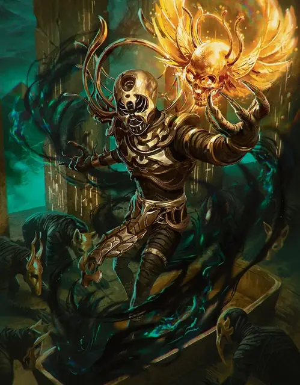

Анхтепот
Ankhtepot
Средняя Нежить, Принципиальная Злая, именной НИП

Класс Защиты 17 Инициатива +6 (16)
Хиты 202 (27к8 + 81)
Скорость 30 футов, Полёта 30 футов (парит)
| мод | спас | ||
|---|---|---|---|
| СИЛ | 18 | +4 | +4 |
| ЛОВ | 10 | +0 | +0 |
| ТЕЛ | 17 | +3 | +3 |
| мод | спас | ||
|---|---|---|---|
| ИНТ | 15 | +2 | +8 |
| МДР | 20 | +5 | +11 |
| ХАР | 16 | +3 | +3 |
Уязвимость к урону Огонь
Иммунитеты Некротический, Яд; Испуганный, Истощение, Отравленный, Очарованный, Парализованный
Чувства пассивное Восприятие 21, Истинное зрение 60 футов
Языки Общий, Драконий, Небесный
Опасность 17 (18 000 опыта или 20 000 опыта в Домене; БВ +6)
Особенности
Восстановление Тёмного владыки. Спустя 1к10 недель после смерти Анхтепот возрождается с полными Хитами где-то в Хар’Акире.
Легендарное сопротивление (3/день, или 4/день в Домене). Если Анхтепот проваливает спасбросок, он вместо этого может в нём преуспеть.
Сопротивление магии. Анхтепот совершает с Преимуществом спасброски от заклинаний и прочих магических эффектов.
Действия
Мультиатака. Анхтепот совершает четыре атаки Выбросом негативной энергии. Он может заменить одну из этих атак использованием Сотворения заклинаний (Слово силы: ошеломление).
Выброс негативной энергии. Бросок рукопашной или дальнобойной атаки: +11, досягаемость 5 фт. или дальность 60 фт. Попадание: 26 (6к6 + 5) Некротического урона.
Касание смерти (Перезарядка 6). Анхтепот касается одного существа в пределах 5 футов. Если у существа 80 Хитов или меньше, оно умирает; иначе оно получает 52 (8к12) Некротического урона.
Сотворение заклинаний. Анхтепот сотворяет одно из следующих заклинаний, не нуждаясь в компонентах заклинания (заклинательная характеристика — Мудрость, Сл спасброска заклинаний 19):
Неограниченно: Волшебная рука, Гадание, Рассеивание магии, Слово силы: ошеломление
1/день каждое: Поднятие мертвеца, Солнечный ожог
Легендарные действия
У этого существа есть 3 использования Легендарных действий (или 4 использования в Домене); оно может немедленно после окончания хода другого существа потратить одно использование, чтобы совершить одно из следующих действий. Существо восполняет все потраченные использования в начале каждого своего хода.
Удар смерти. Анхтепот совершает одну атаку Выбросом негативной энергии.
Десница судьбы. Спасбросок Силы: Сл 19, одно видимое Анхтепотом существо Большого размера или меньше в пределах 60 футов. Провал: 14 (2к8 + 5) Силового урона, и цель притягивается к Анхтепоту или отталкивается от него на расстояние вплоть до 10 футов по прямой. Успех: Только половина урона. Провал или успех: Анхтепот не может совершить это действие снова до начала своего следующего хода.
Пески времени. Анхтепот телепортируется на расстояние вплоть до 60 футовв видимое им незанятое пространство. Спасбросок Харизмы: Сл 19, все существа в 10-футовой Эманации, исходящей от Анхтепота в пространстве его прибытия. Провал: 11 (2к10) Некротического урона, и цель магическим образом стареет на 10 лет. Успех: Только половина урона. Провал или успех: Анхтепот не может совершить это действие снова до начала своего следующего хода.
Бонус мастерства +6
Анхтепот
Тёмный владыка, что ищет смерти
Анхтепот познал предательство и завоевание. Он познал божественность и власть. Теперь же он знает лишь скуку и отчаяние. Единственное его желание — вернуть утраченное ка, которое, как он знает, сокрыто в Хар’Акире. С ним он надеется снова стать смертным, умереть и предстать перед судом богов. Принесёт ли это покой, или полное забвение — ему безразлично. Анхтепот жаждет лишь конца, и вместе со своими последователями он будет всеми казнями небесными для Хар'Акира, пока не отыщет желаемое.
История Анхтепота
В стране, именуемой Земля тростников и лотосов, Анхтепот служил царской семье верховным жрецом. Старые фараоны умирали, новые восходили на престол, и влиятельный жрец со временем уверился, что богам угоден более мудрый правитель. В день восшествия на трон очередного фараона Анхтепот поднял своих жрецов на мятеж и убил владыку. Но он неверно оценил волю народа: толпа восстала в ярости и казнила жрецов-предателей.
Более того, Анхтепот неверно оценил и волю богов. Представ перед ними после смерти, он был отвергнут бессмертными: они прокляли его и не впустили в загробный мир. Они вернули его обратно, но вырвали часть души — его ка, жизненную сущность, что вдохновляет всякое живое существо.
Анхтепот очнулся, заточённый в собственном трупе; его мумифицировали вместе с приспешниками-предателями. Протекли несчётные века, но в тот самый день, когда последняя память об Анхтепоте стёрлась в Земле тростников и лотосов, пеленальные бинты истлели, и верховный жрец выполз из саркофага. Он вышел из гробницы уже в незнакомой стране — Хар’Акире.
В этом новом краю Анхтепот обнаружил набожный народ, почитавший тех самых богов, которым некогда служил и он. Поколение за поколением он искоренял их веру и подменял её ложными божествами собственного измышления, за которых говорил лишь он один. Заодно он воскресил захороненных вместе с ним жрецов как мумий-владык, подменив им головы образами зверей и чудовищ, священных для его нового культа. Они, Дети Анхтепота, послужили ему, как и при жизни, и вместе мёртвые завоевали души Хар’Акира.
За минувшие эпохи Анкхтепот так и не создал страны, о которой мечтал. Слуги плетут интриги, подданные не процветают, памятники рассыпаются в прах за какие-то столетия. Честолюбие Анкхтепота увяло. Теперь он ищет лишь одного — вернуть свою душу и с её помощью положить конец своему проклятому бессмертию.
Домен Анхтепота
Хар’Акир, домен Анхтепота, изменяется из-за его присутствия, что создаёт следующие эффекты:
• Закрытие границ. Когда Анхтепот находится в домене, он способен по желанию закрывать или открывать границы Хар’Акира. Когда границы закрыты, Туманы вокруг Хар’Акира наполняются песчаными вихрями. Существо, впервые за ход входящее в Туманы или начинающее в них ход, получает 2к6 Рубящего урона.
• Палящее солнце. Любая область Яркого света под открытым небом в Хар’Акире — зона экстремальной жары. Подробности о правилах сильной жары и обезвоживания смотрите в «Руководстве мастера подземелий».
• Власть над нежитью. Вся нежить с Показателем опасности 5 и ниже в Хар’Акире Очарована и повинуется приказам Анкхтепота.
Если Анхтепот умирает, все эти эффекты мгновенно исчезают. Они возникают вновь, если Анхтепот возрождается (см. Восстановление Тёмного владыки).